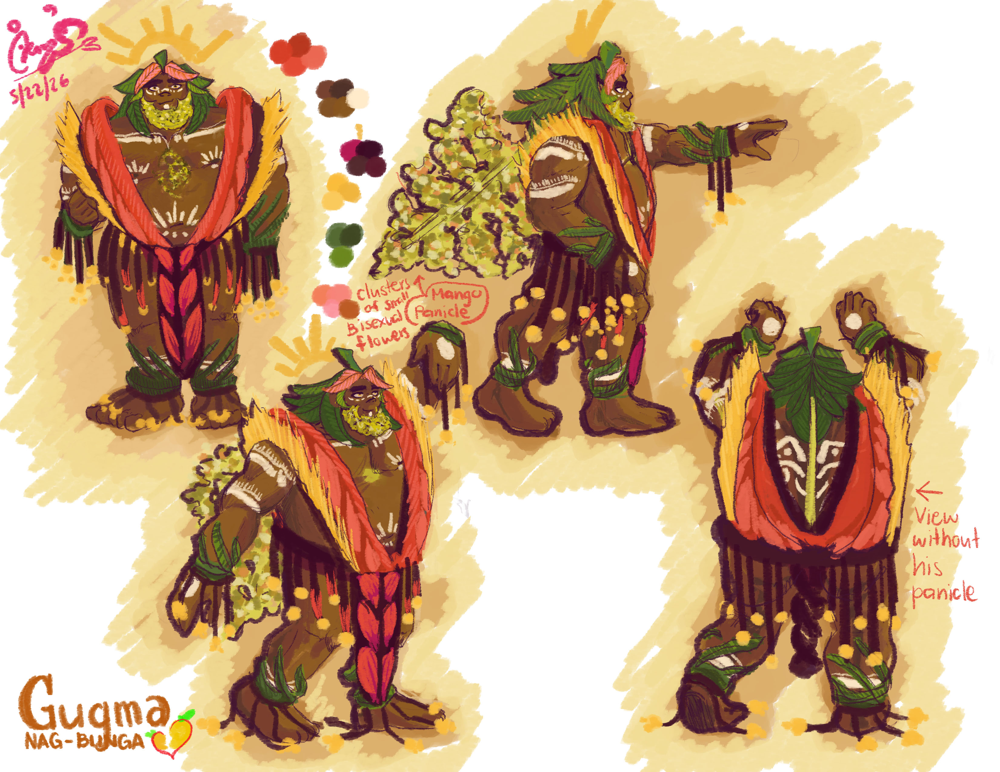

Character Designing: THE FIRST
My first serious project on Character Concepts within my
World Building Project.
Submitted as my Midterm requirement for Digital Illustration
during my first year of college.
Project Overview
Meet Gugma Nagbunga!
The Sun Bearing Mango Hero of the Valley
The project that marked the beginning of my wider, whole-hearted,
and determined world-building journey. I realized I love tribal aesthetic.
Rather than designing a character for grades, I had established my
own visual language, logic, and universal concept which my future Works
would follow.
Work Process
The design process was a really meaningful cornerstone of my journey in designing
It was hard to come up, considering I rarely drew men at this point as I usually drew
women. However, I did look forward to design characters that are off the chart in
proportion and representation. I love them dark colored skin-tones. Really sets them
apart from the usual fair-skinned trope in the media I have lived in for years.
I initially started with the idea of making an indian-looking, filipino, plant-human
hybrid of a character. Design had shifted from a Barong dressed bouncer, to a big
tribal goofy hero. I really loved his design, and am proud of the way he turned out.
He was unintendedly inspired by Asgore from UNDERTALE, whom is a favorite of mine.
This huge goofball really resonates with Gugma as both are also "fathers" of their people
Aside from that, I also find them hearatwarming individuals. Contrast is present however
on their stories. But the similarities is not something I truly expected! I was just experimenting
with his hair on what "looks good" considering he has long leaf-strands... until I find the
reminiscent feel on his hair...
I guess when we really love something subconcsiously, we get to seep that essence out
without even realizing in the things we make with love!
Reflection
Looking back, this project, like I said, is an essential part to push me become
a better artist and aspiring individual. Determination fired me up to continue
my work strong with passion. Persevered to continue even if it felt impossible.
Integrity remained as I seem to divert between my vision from the world's standards
Looking back, I realized I changed when I finally embraced how I meant to work.
It was a meaningful start of something bigger.